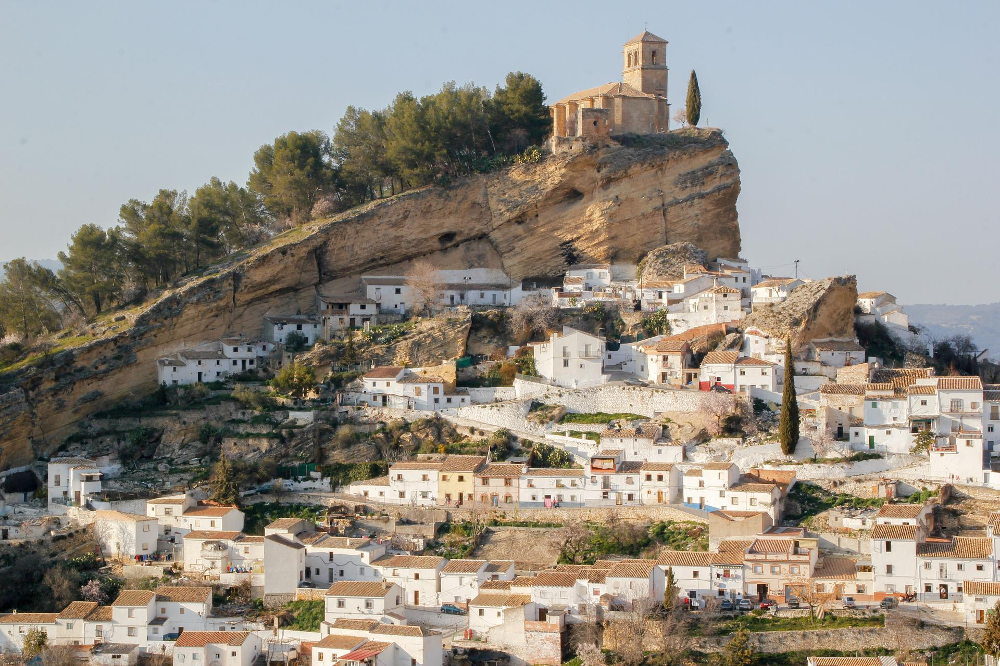
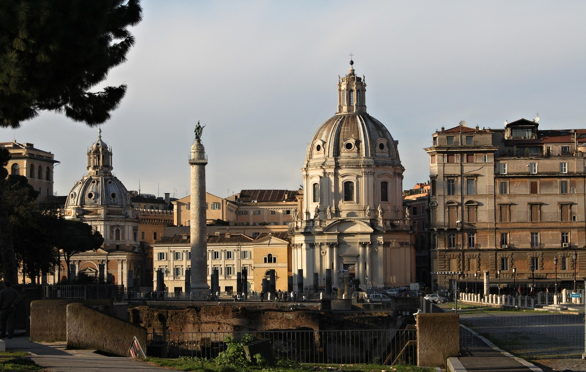
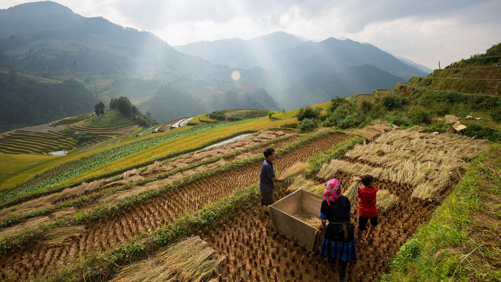
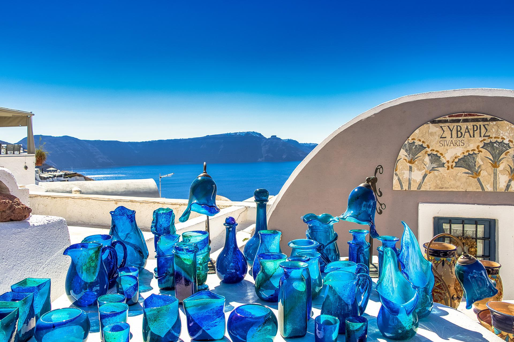
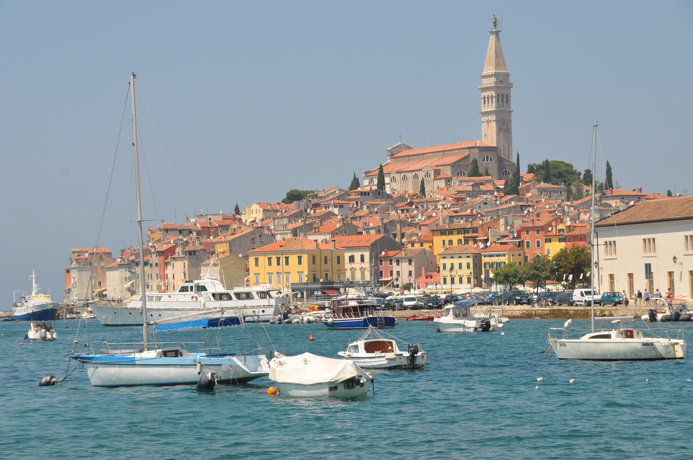

Spain is a storied country of stone castles, snowcapped mountains, vast monuments, and sophisticated cities, all of which have made it a favoured travel destination. The country is geographically and culturally diverse. Its heartland is the Meseta, a broad central plateau half a mile above sea level. Much of the region is traditionally given over to cattle ranching and grain production; it was in this rural setting that Miguel de Cervantes’s Don Quixote tilted at the tall windmills that still dot the landscape in several places
Italy, country of south-central Europe, occupying a peninsula that juts deep into the Mediterranean Sea. Italy comprises some of the most varied and scenic landscapes on Earth and is often described as a country shaped like a boot. At its broad top stand the Alps, which are among the world’s most rugged mountains. Italy’s highest points are along Monte Rosa, which peaks in Switzerland,
Bali is a province of Indonesia and the westernmost of the Lesser Sunda Islands. East of Java and west of Lombok, the province includes the island of Bali and a few smaller neighbouring islands, notably Nusa Penida, Nusa Lembongan, and Nusa Ceningan. The provincial capital, Denpasar,[7] is the most populous city in the Lesser Sunda Islands and the second-largest, after Makassar, in Eastern Indonesia. The upland town of Ubud in Greater Denpasar is considered Bali's cultural centre. The province is Indonesia's main tourist destination, with a significant rise in tourism since the 1980s.[8] Tourism-related business makes up 80% of its economy.[9
Santorini (Greek: Σαντορίνη, pronounced [sandoˈrini]), officially Thira (Greek: Θήρα [ˈθira]) and classic Greek Thera (English pronunciation /ˈθɪərə/), is an island in the southern Aegean Sea, about 200 km (120 mi) southeast from the Greek mainland. It is the largest island of a small, circular archipelago, which bears the same name and is the remnant of a caldera. It forms the southernmost member of the Cyclades group of islands, with an area of approximately 73 km2 (28 sq mi) and a 2011 census population of 15,550. The municipality of Santorini includes the inhabited islands of Santorini and Therasia, as well as the uninhabited islands of Nea Kameni, Palaia Kameni, Aspronisi and Christiana. The total land area is 90.623 km2 (34.990 sq mi).[2] Santorini is part of the Thira regional unit.[3]
Dubrovnik (Croatian pronunciation: [dǔbroːʋniːk] (listen)),[2] historically known as Ragusa (see notes on naming), is a city on the Adriatic Sea in the region of Dalmatia, in southern Croatia. It is one of the most prominent tourist destinations in the Mediterranean Sea, a seaport and the centre of Dubrovnik-Neretva County. Situated in an exclave, it is connected to the rest of the country by the Pelješac Bridge. Its total population is 42,615 (2011 census). In 1979, the city of Dubrovnik was added to the UNESCO list of World Heritage Sites in recognition of its outstanding medieval architecture and fortified old town.[3]
Scotland (Scots: Scotland, Scottish Gaelic: Alba [ˈal̪ˠapə] (listen)) is a country that is part of the United Kingdom. Covering the northern third of the island of Great Britain,[16][17][18] mainland Scotland has a 96-mile (154-kilometre) border with England to the southeast and is otherwise surrounded by the Atlantic Ocean to the north and west, the North Sea to the northeast and the Irish Sea to the south. It also contains more than 790 islands,[19] principally in the archipelagos of the Hebrides and the Northern Isles. Most of the population, including the capital Edinburgh, is concentrated in the Central Belt—the plain between the Scottish Highlands and the Southern Uplands—in the Scottish L